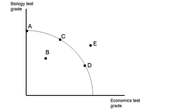

The four essential economic activities are …
production, consumption, distribution, and recycling.
extraction, manufacturing, distribution, and consumption.
extraction, consumption, distribution, and resource maintenance.
production, consumption, distribution, and resource maintenance.
production, distribution, recycling, and resource maintenance.
Which one of the following is NOT one of the four essential economic activities?
Production
Development
Distribution
Consumption
Resource maintenance
Which one of the following is a normative statement?
The capital of Kansas is Topeka.
My roommate’s name is Kristen.
Reducing unemployment should be the main goal of the government.
I’m planning to go the movies Friday night.
Most economists believe the unemployment rate will increase next year.
Which one of the following is a positive statement?
Economic growth is more important than environmental protection.
Reducing unemployment should be the main goal of the government.
The government should keep the inflation rate below 4%.
Most economists believe the unemployment rate will increase next year.
The benefits of economic growth should be equally distributed.
According to the text, the three major macroeconomic goals are …
good living standards, stability and security, and sustainability.
low inflation, low unemployment, and economic growth.
economic growth, stability and security, and good living standards.
low inflation, low unemployment, and well-being.
economic growth, well-being, and good living standards.
The term used to refer to fluctuations in the level of national production is …
the inflation cycle.
the stock market cycle.
the sustainability cycle.
the living standards cycle.
the business cycle.
Making sure that a country’s currently favorable macroeconomic environment will continue into the future would be part of which macroeconomic goal?
Stability
Equity
Productivity
Security
Sustainability
The precautionary principle states that …
it’s better to reduce unemployment than inflation.
we should err on the side of caution when dealing with natural systems or human health.
we should err on the side of caution when dealing with macroeconomic policy.
it’s better to leave things as they are than to do anything different.
we should err on the side of caution when dealing with the stock market.
Which one of the following statements is FALSE?
Positive questions concern how things are.
Well-being refers to the broad goal of promoting the sustenance and flourishing of life.
In recent years GDP growth has been evenly distributed across countries.
Economic development refers to movement from a situation of general poverty to one of increased production and plenty.
Global economic production per capita has grown less rapidly than global economic production.
Classical economics is best characterized with which statement below?
The business cycle is a function of “animal spirits.”
Taking advantage of the division of labor through specialization leads to economic growth.
Stable monetary policy is the key to steady economic growth.
Government intervention is required to “fine tune” the economy.
Government policy should be used to ensure that economic growth is distributed evenly throughout society.
The term “laissez-faire” would be applied to which type of economy?
An economy that promotes sustainability.
An economy that seeks to equally distribute economic growth.
An economy with policies to smooth business cycle fluctuations.
An economy with a stable rate of economic growth.
An economy with limited government regulation.
What is Say’s Law?
Reducing unemployment leads to increased inflation.
There’s no such thing as a free lunch.
Supply creates its own demand.
Demand creates its own supply.
The growth of the money supply should be constant.
Empirical investigation is analysis based on …
abstract thought.
the study of past events.
the study of politics.
the recording of specific phenomena.
the study of culture.
Which one of the following is an example of theoretical investigation?
It is observed from looking at data that inflation rises when GDP growth is high.
Based on statistical analysis, it is shown that a 1% increase in inflation leads to a 0.5% decrease in GDP growth.
Scientists demonstrate that higher temperatures in the past were associated with higher levels of carbon dioxide in the atmosphere.
The Great Depression is explained based on conditions specific to that period in time.
Economists hypothesize that inflation and unemployment should be inversely related.
An analytical tool that highlights some aspects of reality while ignoring others is called …
a model.
empirical investigation.
historical investigation.
an institution.
a market.
Technological progress will …
result in movement to the left along a stable production possibilities frontier.
result in movement to the right along a stable production possibilities frontier.
move a production possibilities frontier inward, towards the origin.
move a production possibilities frontier outward, away from the origin.
move an economy to a point within the production possibilities frontier.
Questions 17-19 below refer to the following diagram which illustrates the potential grades Miguel could get on his biology and economics tests based on how much time he devotes to studying each subject.

Considering the graph above, which one of the following statements is FALSE?
If Miguel devotes all his available time to studying biology, he will end up at point A.
Miguel can not reach point E with his available resources.
Point B can be interpreted as an inefficient outcome.
Point D is more efficient than point A.
Points C and D can both be considered efficient.
Which one of the points on the above graph is unattainable by Miguel?
Point A
Point B
Point C
Point D
Point E
Which one of the following statements about Miguel’s production possibilities is FALSE?
Point A is attainable and efficient
Point B is attainable and efficient
Point C is attainable and efficient
Point D is attainable and efficient
Point E is unattainable
The value of the next best alternative that is foregone when a choice is made is called …
opportunity cost.
efficiency cost.
scarcity cost.
abundance cost.
tradeoff cost.
Which one of the following statements is FALSE?
More than one point along a production-possibilities frontier can be considered efficient.
Movement along a production-possibilities frontier illustrates the concept of opportunity costs.
Movement along a production-possibilities frontier implies a change in technology.
Efficiency can be defined as using inputs to yield the highest possible value of output.
The extent of resource maintenance in a society can affect its future production-possibilities frontier.
What term do economists use to describe a situation of pure exchange?
Scarcity
Abundance
Efficiency
Tradeoffs
“The market”
The two main economic actors in the basic neoclassical model are …
households and firms.
firms and government.
capitalists and the proletariat.
firms and government.
employers and workers.
Which one of the following is NOT considered an institutional requirement for markets to function effectively?
Voting rights
Private property
Contracts
Physical infrastructure
Money
Which one of the following is NOT a reason that markets produce efficient outcomes, according to the basic neoclassical model?
The profit motive forces producers to put resources to their most valuable uses.
Markets account for all negative and positive externalities.
The forces of supply and demand smoothly coordinate the actions of many individual decision makers.
Consumption decisions maximize the satisfaction of consumers.
Maximizing market production is assumed to a reasonable proxy for maximizing well-being.
Which one of the following is yhe best example of a social institution of trust?
A public good
An externality
An implicit contract
Physical infrastructure
Private property
Which one of the following statements about markets is FALSE?
The Internet company eBay would be an example of a market as an institution that brings buyers and sellers together.
The basic neoclassical model assumes that markets are perfectly competitive.
A commonly stated advantage of markets is that all exchanges are voluntary, rather than coerced.
An implicit contract would be an example of a social institution of trust.
An advantage of markets is that they do not need money to operate smoothly.
The common term for someone who enjoys a benefit of a public good without paying for it is …
a freeloader.
an offset.
a low rider.
a free rider.
a cost rider.
The common term for a side effect of a market transaction that affects those not involved in the transaction is …
a free rider
an externality
an implicit contract.
an internality
a transaction cost.
Which one of the following is the best example of a transaction cost?
Someone visits a National Park without paying the entrance fee
Someone suffers from automobile pollution even though they do not drive
The price of a shirt is reduced from $30 to $20
The price of a shirt is increased from $30 to $40
A fee of $500 is paid to a lawyer for writing a business contract
Which one of the following is the best example of an externality?
Someone visits a National Park without paying the entrance fee
Someone suffers from automobile pollution even though they do not drive
The price of a shirt is reduced from $30 to $20
The price of a shirt is increased from $30 to $40
A fee of $500 is paid to a lawyer for writing a business contract
Which one of the following is NOT a reason why “free markets” may fail to maximize human well-being?
Free markets may fail to account for externalities.
Free markets may fail to provide public goods.
Market power may influence the outcomes of markets.
Free market exchanges may be voluntary.
Free markets may fail to provide for people’s basic needs.